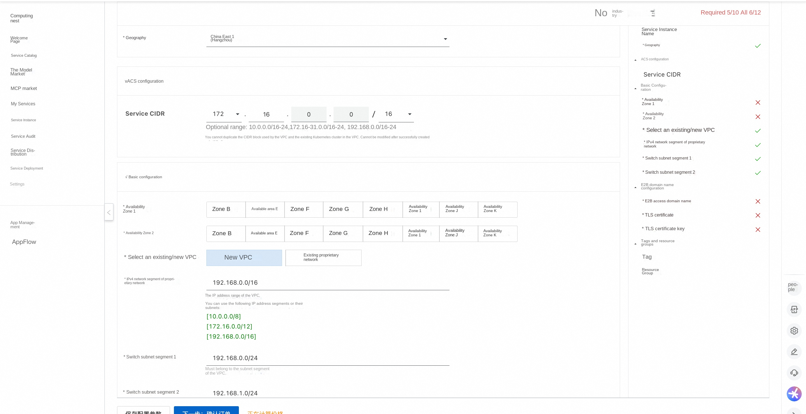
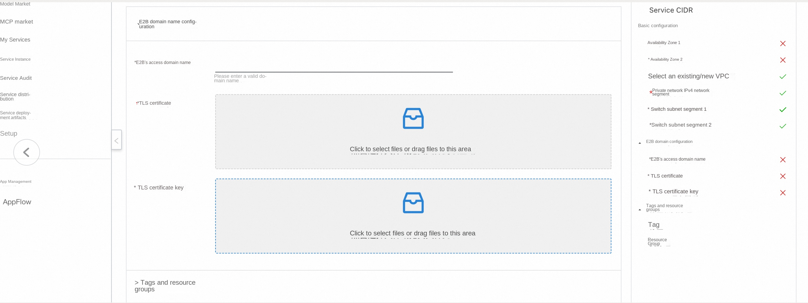
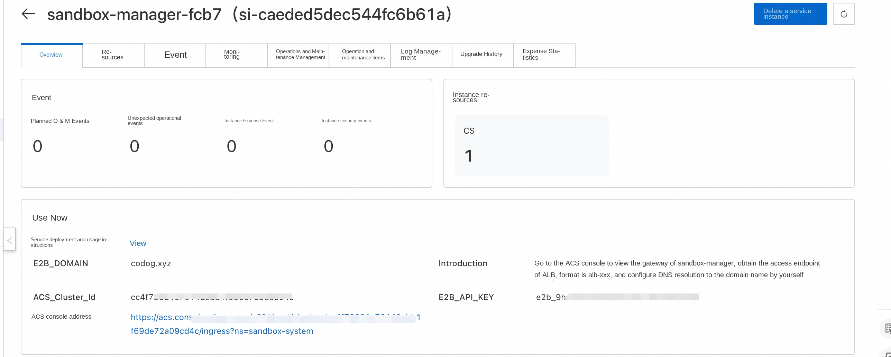
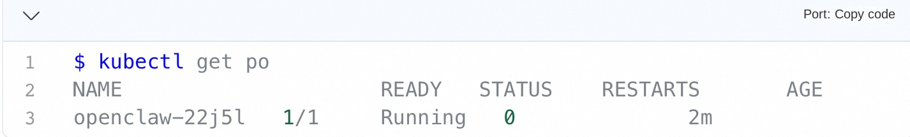
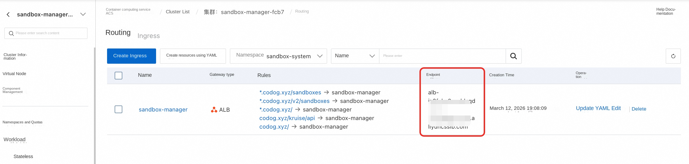
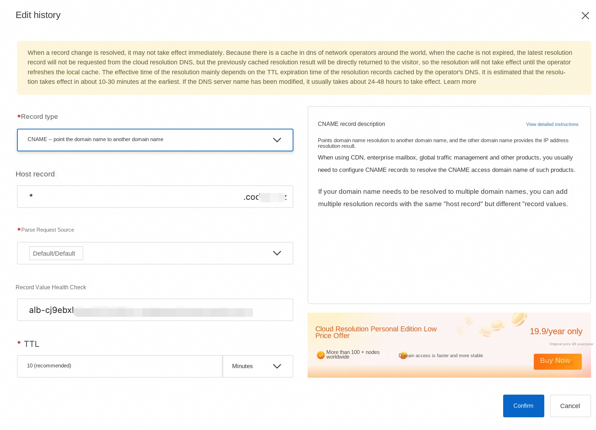

Use E2B to manage security sandbox in ACS cluster
Overview
E2B is a popular open source security sandbox framework that provides a simple and easy-to-use Python and JavaScript SDK for users to create, query, execute code, and request ports on security sandboxes. The ack-sandbox-manager component is a backend application compatible with the E2B protocol, enabling users to build a sandbox infrastructure with performance comparable to that of native E2B in any K8s cluster.
This service provides a solution for quickly building a security sandbox in an ACS cluster and supports interaction using the E2B protocol.
Pre-preparation
The standard E2B protocol requires a domain name (E2B_DOMAIN) to specify the backend service. For this, you need to prepare your own domain name. The E2B client must request the backend through the HTTPS protocol, so it also needs to apply for a wildcard certificate for the service.
The following describes the steps for preparing domain names and certificates in the test scenario. The generated fullchain.pem and privkey.pem files will be used in the subsequent deployment phase.
Prepare Domain Name
- In the test scenario, to facilitate verification, you can use the test domain name, for example: agent-vpc.infra.
Obtaining a Self-Signed Certificate
The script generate-certificate.sh creates a self-signed certificate. You can use the following command to view how the script is used.
plaintext $bash generate-certificates.sh --help
Usage: generate-certificates.sh [OPTIONS]
Options: -d, --domain DOMAIN Specify certificate domain (default: your.domain.com) -o, --output DIR Specify output directory (default: .) -D, --days DAYS Specify certificate validity days (default: 365) -h, --help Show this help message
Examples: generate-certificates.sh -d myapp.your.domain.com generate-certificates.sh --domain api.your.domain.com --days 730 '''
Example of a command to generate a certificate:
plaintext ./generate-certificates.sh --domain agent-vpc.infra --days 730 '''
After the certificate generation is complete, you will get the following file:
-
fullchain.pem: server certificate public key
-
privkey.pem: Server certificate private key
-
ca-fullchain.pem:CA certificate public key
-
ca-privkey.pem:CA certificate private key This script generates both single domain name (your.domain) and wildcard domain name (*.your.domain) certificates, which is compatible with the native E2B protocol and OpenKruise custom E2B protocol.
Deployment Process
-
Open the compute nest service deployment link
-
Fill in the relevant deployment parameters, select the deployment region, Service CIDR of the ACS cluster, and configure the VPC

-
Fill in the E2B domain name configuration. The E2B access domain name is configured as the domain name in the preparation stage of the above premise,
-
TLS certificate selection fullchain.pem file
-
TLS certificate private key selection privkey.pem file

-
E2B_API_KEY will be generated to access E2B API
-
sandbox-The default CPU and memory configuration of manager components defaults to 2C and 4Gi, which can be adjusted as needed
-
After the configuration is completed, click Confirm Order
-
After the deployment is successful, you can also view E2B_API_KEY, E2B_DOMAIN and other information on the details page of the service instance.

OpenClaw sandbox definition description
By default, the computing nest uses the following yaml to create a single-copy OpenClaw SandboxSet preheating pool (equivalent to an e2b template). If you build a mirror later, you can directly replace the openclaw mirror in the cluster. In order to improve the pulling speed, it can also be replaced with an intranet mirror: registry-${RegionId}
'''yaml apiVersion: agents.kruise.io/v1alpha1 kind: SandboxSet metadata: name: openclaw namespace: default annotations: e2b.agents.kruise.io/should-init-envd: "true" labels: app: openclaw spec: persistentContents: -filesystem replicas: 1 template: metadata: labels: alibabacloud.com/acs: "true"# Use ACS computing power app: openclaw annotations: "true"# supports pause spec: restartPolicy: Always automountServiceAccountToken: false #Pod does not mount service account enableServiceLinks: false #Pod does not inject service environment variables initContainers: -name: init image: registry-cn-hangzhou.ack.aliyuncs.com/acs/agent-runtime:v0.0.2 imagePullPolicy: IfNotPresent command: [ "sh", "/workspace/entrypoint_inner.sh"] volumeMounts: -name: envd-volume mountPath: /mnt/envd env: -name: ENVD_DIR value: /mnt/envd -name: __IGNORE_RESOURCE __ value: "true" restartPolicy: Always containers: -name: openclaw image: registry-cn-hangzhou.ack.aliyuncs.com/ack-demo/openclaw:2026.3.2 imagePullPolicy: IfNotPresent securityContext: readOnlyRootFilesystem: false runAsGroup: 0 runAsUser: 0 resources: requests: cpu: 2 memory: 4Gi limits: cpu: 2 memory: 4Gi env: -name: ENVD_DIR value: /mnt/envd -name: DASHSCOPE_API_KEY value: sk-xxxxxxxxxxxxxxxxx# Replace with your real API_KEY -name: GATEWAY_TOKEN value: clawdbot-mode-123456# Replace with the token you want to access the OpenClaw volumeMounts: -name: envd-volume mountPath: /mnt/envd startupProbe: tcpSocket: port: 18789 initialDelaySeconds: 5 periodSeconds: 5 failureThreshold: 30 lifecycle: postStart: exec: command: [ "/bin/bash", "-c", "/mnt/envd/envd-run.sh"] terminationGracePeriodSeconds: 30# can be adjusted according to the actual exit speed volumes: -emptyDir: {} name: envd-volume '''
Important Field Description
-
SandboxSet.spec.persistentContents: filesystem# Only the file system is retained during pause and connect (ip and mem are not retained)
-
template.spec.restartPolicy: Always
-
template.spec.automountServiceAccountToken: false #Pod does not mount service account
-
template.spec.enableServiceLinks: false #Pod does not inject service environment variables
-
template.metadata.labels.alibabacloud.com/acs: "true"
-
"true"# Support pause, connect action
-
template.spec.initContainer# download and copy envd environment, and keep it
-
template.spec.initContainers.restartPolicy: Always
-
template.spec.containers.securityContext.runAsNonRoot: true #Pod started with normal user
-
template.spec.containers.securityContext.privileged: false# Disable privilege configuration
-
template.spec.containers.securityContext.allowPrivilegeEscalation: false
-
template.spec.containers.securityContext.seccompProfile.type.RuntimeDefault
-
template.spec.containers.securityContext.capabilities.drop: [ALL]
-
template.spec.containers.securityContext.readOnlyRootFilesystem: false
If you expect to use Pause, be sure not to set up liveness/rediness probes to avoid necessary modifications to health check issues during the pause.
- Modify the mirror image of the region where it is located, and it is an intranet mirror image [currently, it will be automatically injected in the future]]
Replace the mirror image built by the customer.
support the server interface of the e2b sdk by starting the envd in the pod.
Create the preceding resource by kubectl. After the SandboxSet is created, you can see that one sandbox is available:

Service deployment verification
After the deployment is complete, an ACS cluster is created. In the ACS cluster, there is a sandbox-manager Deployment under the sandbox-system namespace to manage the sandbox. Use the following procedure to verify that the E2B service is running normally, and introduce the use of the demo in the sandbox.
Configure Domain Name Resolution
Local Configuration Host: For Quick Verification
- Obtain the access endpoint of ALB: Alb is used as the Ingress in the ack-sandbox-manager cluster. On the service instance details page, you can find the link to the ACS console. Click the link to view the gateway of sandbox-manager to obtain the access endpoint of ALB, as shown in the following figure

-
Obtain the public network address corresponding to the Alb endpoint: locally obtain the public network Ip'ping alb-xxxxxx by ping the access endpoint of ALB'
-
Configure the public network address and domain name of ALB to the local host:'echo "ALB_PUBLIC_IP api.E2B_DOMAIN" >> /etc/hosts' Example: 'xx.xxx.xx.xxx api.agent-vpc.infra'
-
After Host is configured, E2B sandbox can be managed locally without DNS resolution. For specific usage, please refer to the chapter "Using Sandbox demo.
Configuring DNS Resolution: For Production Environments
-
Obtain the access endpoint of ALB: Alb is used as the Ingress in the ack-sandbox-manager cluster. On the service instance details page, you can go to the link of ACS console and click the link to view the gateway of sandbox-manager to obtain the access endpoint of ALB, as shown in the following figure
-
Configure DNS resolution: Please resolve Alb's access endpoint to the corresponding domain name in CNAME record type,

-
If you need to access through the intranet, you can add an intranet domain name for E2B through PrivateZone. (If you select New VPC during deployment, the PrivateZone has been automatically configured for you, and only resolution records need to be added later.) [Optional]]
Replace xxxx with the domain name you specified earlier, and the return value 2xx indicates that the e2b service is running. if it is a self-issued certificate, you need to specify the ca-fullchain.pem. Or use your local certificate by configuring environment variables [this action is to create sandbox] e2b can use "admin-987654321"-> the actual key
yaml curl --cacert fullchain.pem -X POST --location "https://api.agent-vpc.infra/sandboxes "\ -H "Content-Type: application/json "\ -H "X-API-Key: admin-987654321 "\ -d '{ "templateID": "openclaw ", "timeout": 300 }' '''
If there are "sandboxID" and "state":"running" in the json of the returned result, the e2b service can be considered to have run.
Create a sandbox through the e2b sdk
python from e2b_code_interpreter import Sandbox
sbx = Sandbox.create ( template="openclaw ", request_timeout = 60, metadata= { "e2b.agents.kruise.io/never-timeout": "true"# never expires, does not kill automatically } ) r = sbx.commands.run("whoami") print(f"Running in sandbox as \"{r.stdout.strip()}\"") '''
Sleep Wake Test Code
yaml Write the following file to openclaw.py
from dotenv import load_dotenv import os import time import requests from e2b_code_interpreter import Sandbox
def main(): print("Hello from openclaw-demo!) load_dotenv()
Step 1: Create the sandbox print("\n [Step 1] Create sandbox...") start_time = time.monotonic() sandbox = Sandbox.create( 'openclaw ', timeout=1800 envs= { "DASHSCOPE_API_KEY": OS .environ.get("DASHSCOPE_API_KEY", "") "GATEWAY_TOKEN": OS .environ.get("GATEWAY_TOKEN", "clawdbot-mode-123456") }, metadata= { "e2b.agents.kruise.io/never-timeout": "true" } ) print(f "sandbox creation time: {time.monotonic() - start_time:.2f} seconds") print(f"Sandbox ID: {sandbox.sandbox_id}") sandbox.files.write("/tmp/test.txt", "Hello, World!)
Wait a few seconds for the service to start
print("Wait 3 seconds for the gateway to start...") time.sleep(3)
Step 3: Wait for the service to be ready
print("\n [Step 3] Wait until the service is ready...") host = sandbox.get_host(18789) base_url = f"https://{host}" print(f"base_url: {base_url}")
start_time = time.monotonic() ready = False while True: try: response = requests.get ( f"{base_url}/?token=clawdbot-mode-123456 ", verify=False timeout=5 ) print(f "Response status code: {response.status_code}") if response.status_code == 200: print("Service ready!) print(f "Response content: {response.text[:200]}...")# Print first 200 characters ready = True break except requests.ConnectionError as e: print(f "connection error: {e}") except requests.Timeout: print("Request timed out, continue waiting...") time.sleep(0.5) print("waiting...")
print(f "Total time spent waiting for ready: {time.monotonic() - start_time:.2f} seconds")
Step 4: Wait for user confirmation before pausing
print("\n [Step 4] Service is ready to pause sandbox...") input("Press Enter to continue with pause...")
Step 5: Pause sandbox
print("\n [Step 5] Perform sandbox beta_pause...") start_time = time.monotonic() pause_success = sandbox.beta_pause() print(f "pause: {time.monotonic() - start_time:.2f} seconds") The result of print(f "pause success: {pause_success}")# pause. None is the expected value and is returned if there are other error messages.
Step 6: Reconnect the sandbox
input("[Step 6] Prepare to reconnect sandbox press Enter to continue with the connect operation...") Wait 10 seconds for the sandbox to pause completely print("Wait 60 seconds for the sandbox to pause completely...") time.sleep(60) print("\n [Step 6] Reconnect sandbox...") start_time = time.monotonic() sameSandbox = sandbox.connect(timeout=180) connect_time = time.monotonic() - start_time print(f "connect time: {connect_time:.2f} seconds") print(f "Reconnect successfully, Sandbox ID: {sameSandbox.sandbox_id}")
print("\nAll steps completed!)
if name == "main": main() '''